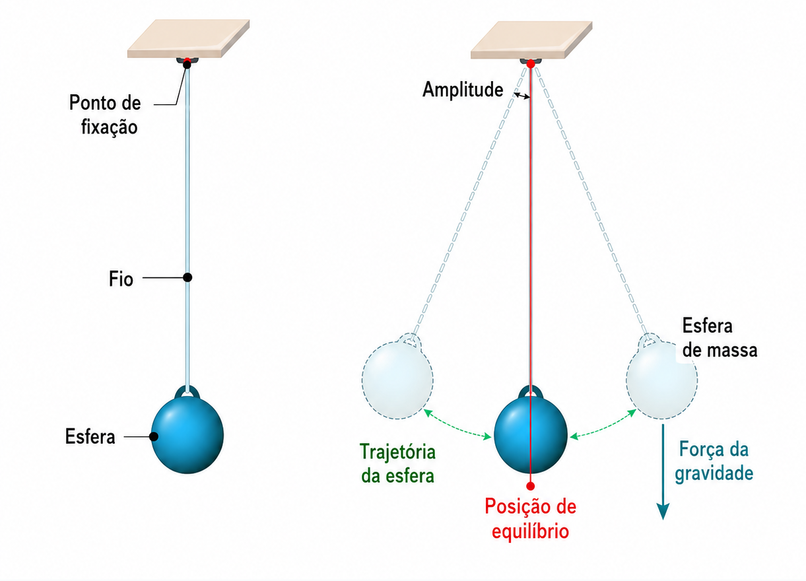
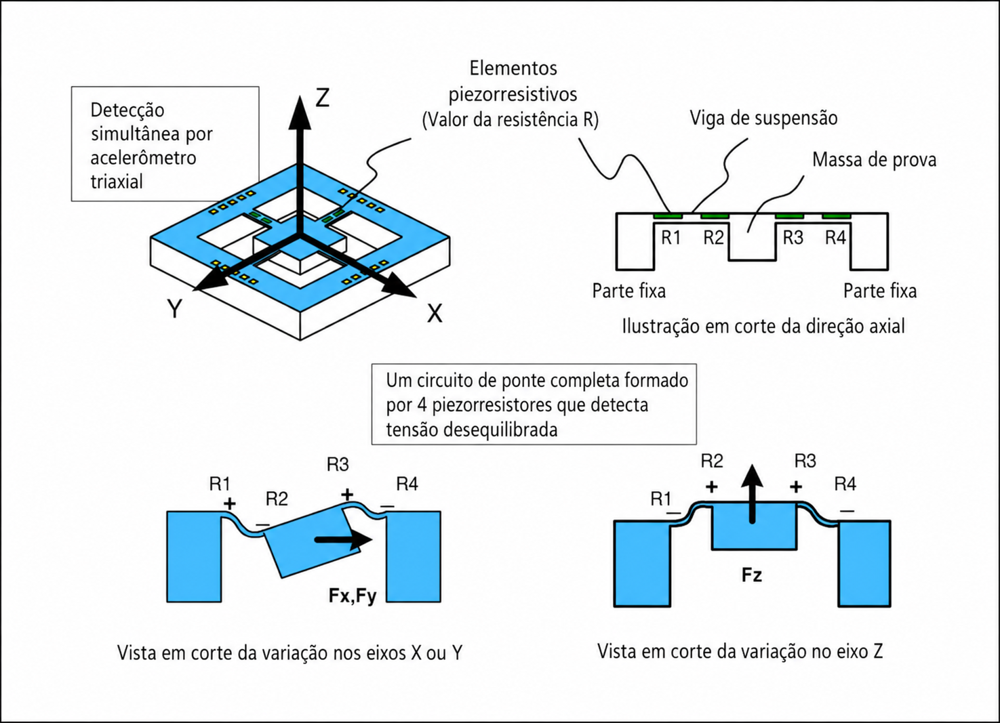

Prof. Me. Gustavo Ferreira Palma
Pauta
- Kit de Sensores;
- Acelerômetro;
- Aplicações;
- Desenvolvimento de Exemplo Prático.
Kit de Sensores
- Os Smartphones modernos atualmente possuem um kit completo de sensores, contando com acelerôtros,
giroscópios, termômetros, luxímetros, bussolas e alguns outros;
- Esses sensores podem ser utilizados pelas mais diversas aplicações, variando desde câmeras até aplicativos
utilitários como níveladores, ou bússolas
- Um dos sensores mais interessantes e úteis presentes nos smartphones é o acelerômetro.
Acelerômetro
- Os acelerômetros atuam como pêndulos eletrônicos, baseando seu comportamento no de um pêndulo mecânico

Acelerômetro
- Construção Interna de um Acelerômetro

Aplicações
- Utilizando o SDK do android conseguimos reproduzir uma das experiências mais interessantes envolvendo
pêndulos, o calculo da força da aceleração da gravidade:
- O acelerômetro fornece um vetor de aceleração:
\[
\vec{a} =
\begin{bmatrix}
a_x\\
a_y\\
a_z
\end{bmatrix}
\]
Aplicações
- Estimativa da gravidade (Filtro Passa-Baixa), a aceleração da gravidade é estimada utilizando um filtro
passa-baixa:
\[
\vec{g}_k=
\alpha\vec{g}_{k-1}
+
(1-\alpha)\vec{a}_k
\]
- Onde $ \alpha\ $ é determiado por $\alpha=
\frac{\tau}
{\tau+\Delta t}$
-
Sendo:
- $ t $: a constante de tempo do filtro;
- $ \Delta T $: a constante de tempo do filtro;
- Aplicando a cada um dos eixos temos:
- $ g_x(k)= \alpha g_x(k-1) + (1-\alpha)a_x(k) $
- $ g_y(k)= \alpha g_y(k-1) + (1-\alpha)a_y(k) $
- $ g_z(k)= \alpha g_z(k-1) + (1-\alpha)a_z(k) $
- Sendo $ K $, a leitura atual do sensor em cada um dos eixos
Aplicações
- Depois de Estimar a gravidade podemos remove-la (Filtro Passa-Alta), assim tendo como resultante a
aceleração linear aplicada ao dispositivo:
$$
\vec{a}_{lin}
=
\vec{a}
-
\vec{g}
$$
- Expandindo para cada um dos eixos temos:
- $ a_{lin,x} = a_x-g_x $
- $ a_{lin,y} = a_y-g_y $
- $ a_{lin,z} = a_z-g_z $
Aplicações
- Para sintetizar os dados e apresentar um unico valor escalar, podemos calcular o módulo da aceleração da
gravidade:
$$
|\vec g|
=
\sqrt{
g_x^2+
g_y^2+
g_z^2
}
$$
- Seguindo a mesma ideia, podemos sintetizar os valores da aceleração aplicada ao dispositivo em um único
valor escalar, obtendo o módulo da aceleração linear:
$$
|\vec a_{lin}|
=
\sqrt{
a_{lin,x}^2+
a_{lin,y}^2+
a_{lin,z}^2
}
$$
Implementando o modelo em um exemplo prático
OBRIGADO!
Podem me encontrar aqui:
- gustavo.palma@unisal.edu.br
- www.gustavopalma.com.br